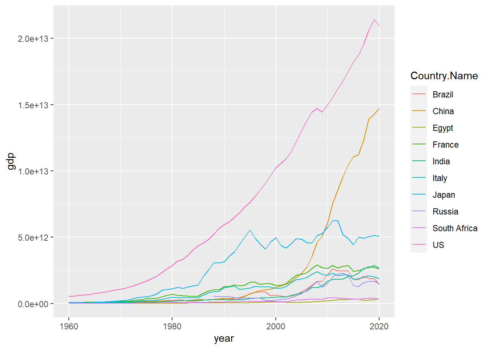

Chapter 8 GDP time series
library(tidyverse)
library(zoo)
library(forecast)Now we want to compare the covid damage with the disaster damage. However the covid is not a disaster that can show the economic damage clearly as some natural disaster as. We then try to develop a GDP decrease by predicting a no covid possible GDP and compare the difference.
First we need to find out the target contries and then making predictions.
target.Country = c('China','US','Russia','India','Brazil','Japan','France','Italy','South Africa','Egypt')
GDP = read.csv('data/GDP.csv') %>%
select(-X) %>%
filter(Country.Name %in% target.Country) %>%
pivot_longer(cols = X1960:X2020, values_to = 'gdp', names_to = 'year') %>%
mutate(year = as.numeric(substr(year, 2, 5)))Now first see if there is a trend or seasonal effect
ggplot(GDP, aes(year, gdp))+
geom_line(aes(color = Country.Name))
I don’t think that there is a seasonal effect, but there is obviously a trend. Then we try to use difference method to get a stationary time series data for each country.
diff = c()
for(c in target.Country){
gdp = GDP %>% filter(Country.Name == c & !is.na(gdp))
gdp.dif1<-diff(gdp$gdp)
gdp.dif2<-diff(gdp$gdp,1,2)
a = fUnitRoots::adfTest(gdp.dif1)
b = fUnitRoots::adfTest(gdp.dif2)
diff = c(diff, ifelse(a@test$p.value>b@test$p.value, 1, 2))
}
diff##
## 1 1 2 2 2 2 2 2 2 2So we are more likely to do second order difference at this time. After several tries, we find that ARIMA(1,2,0) best fit the data
forecastgdp = c()
for(c in target.Country){
gdp = GDP %>% filter(Country.Name == c & !is.na(gdp) & year!=2020)
gdparima = arima(gdp$gdp,order=c(1,2,0))
forecastgdp = c(forecastgdp, forecast(gdparima,h=1)$mean)
}Since we’ve already get the estimate, we want to see the difference between real data and the estimate
GDPplot = GDP %>%
left_join(data.frame(est = forecastgdp, Country.Name = target.Country)) %>%
mutate(est = ifelse(year!=2020, gdp, est)) %>%
filter(year > 2013)## Joining, by = "Country.Name"col = c(estimate = 'red', real = 'black')
ggplot(GDPplot)+
geom_line(aes(year, est, col = 'estimate')) +
geom_line(aes(year, gdp, col = 'real'))+
facet_wrap(~Country.Name, scales = "free_y", nrow = 5)+
scale_colour_manual(name = "Type", values = col)
As we can see from the plot, all the countries suffered from a GDP decrease in 2020 except China and Eygpt. For China, the reason is that it use a compulsory policy to prevent the covid from spreading thus contral the cases. For Egypt,